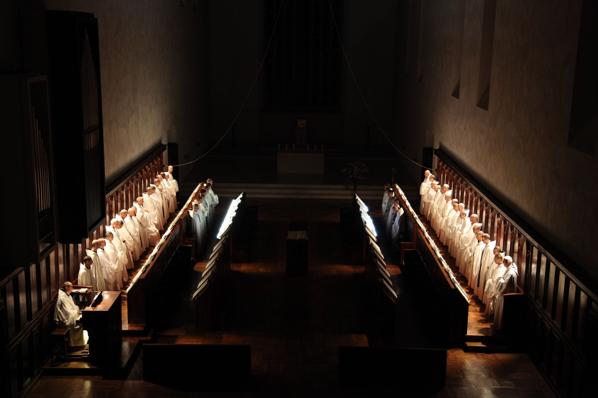
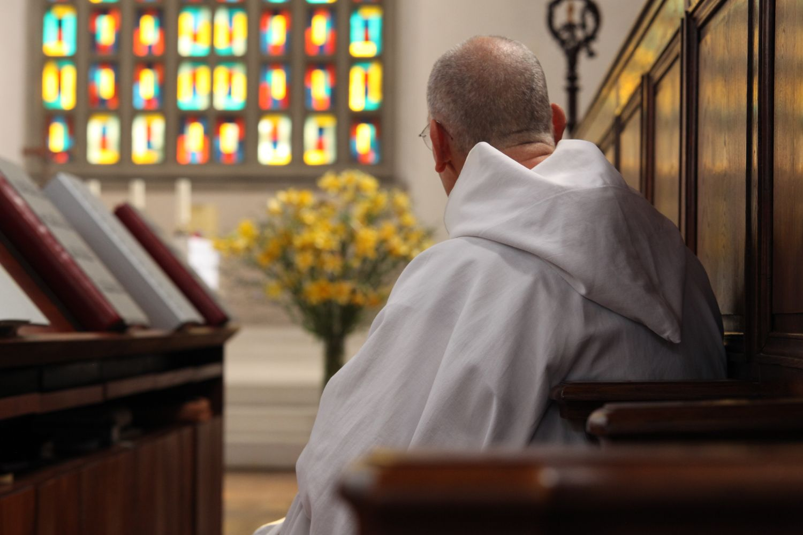
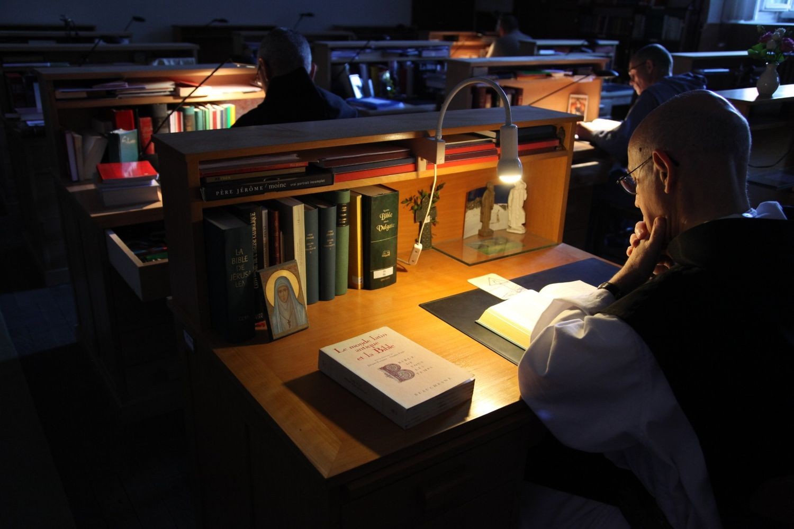
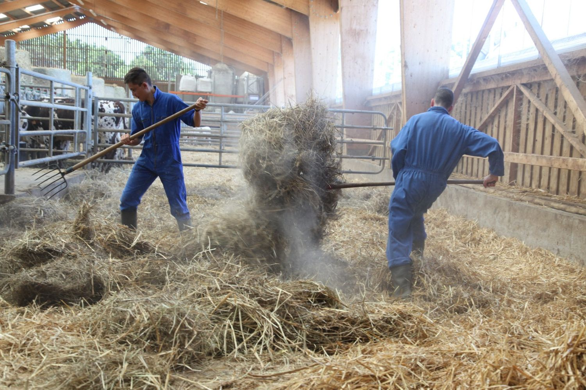

Who is the man who desires life?
We all long for happiness: a full life, a life lived to the full, a life of loving and being loved.
Yet neither success, nor money, nor pleasure is enough to fill our hearts. We thirst for a deeper life, for a love that lasts.
This life is God’s gift to us. It has a face: Jesus Christ.
Why do men become monks today?
Because some men discover that Jesus is calling them to give him their life.
A monk is not only looking for silence or a quieter existence. He wants to become a friend of God and to answer his love by the gift of himself.
Monastic life is organised around this search: prayer, reading, work and life with the brothers all serve one and the same friendship.

Becoming a friend of God
It sounds crazy, but it is true: man can become a friend of God! This is not a pious phrase.
God calls us to know him, to love him, to live with him. Not only during a few moments of prayer, but in our whole existence.
This happiness is offered to everyone. Monastic life gives those who are called to it means particularly suited to seeking it.
Can one seek this friendship in the middle of the world?
Yes. Friendship with God is offered to everyone, in different situations and vocations.
But whoever wants to give God an ever greater place in his life also meets a concrete difficulty: how to keep time for him amid so many occupations and demands?
The monastery offers a setting where silence, prayer, work and the support of the brothers help to turn one’s whole life towards God. Whoever carries this desire may then ask whether Our Lord is calling him to seek him in this way.
What is prayer?
To pray is to live this friendship with God.
This prayer takes different forms: the common praise of the Divine Office, the silent conversation of mental prayer, short calls addressed to Jesus throughout the day.
But it is always the same friendship seeking to express itself and to grow.
Is leaving everything abandoning others?
The monk does not seek in God a happiness he would keep for himself. His life is given to praise God and to pray for the salvation of all.
In his prayer he carries those he knows and those he will never know, those who seek God and those who have no interest in him.
As the branch receives sap from the vine, he receives from Jesus the life he is called to share. It is from his union with God that the fruitfulness of his life can be born.
God begins by walking at our pace. Then the hour comes for the monk to walk at God’s pace.

Seeking God with brothers
The monk does not seek God alone. He enters a community where he receives a life, lets himself be guided and learns to love.
The brothers support him. They are also those through whom God teaches him to come out of himself and open himself to others.
Why do we need to be guided?
Our desire to seek God is essential, but it is not enough to show us the way. We need to receive an art of living with him.
Just as someone learning an instrument goes to the school of a master, the monk agrees to be formed by those who have experience of this life and the task of guiding him.
He does not give up his intelligence or his freedom: he commits them to this apprenticeship.
How does community life bring us closer to God?
We did not choose each of our brothers. Their habits, their characters and their ways of doing things sometimes make us discover our own limits.
This is where common life becomes a school of charity. The small daily renunciations can become a powerful means of union with God when we live them turning towards him, recognising our helplessness and our need for his grace.
With our brothers, we learn to receive God’s love and to respond to it by the gift of ourselves.


A day to seek God
Praying, reading, working, living with one’s brothers: the activities change, but one and the same search runs through the day.
All of monastic life is organised to help the monk remain close to Jesus and give him his life.
Discover a day at the monastery → soonWhat if God were calling me?
A monastic vocation is not first of all a plan one invents. It is an invitation from God that one learns to recognise and wishes to answer freely.
You do not need to have everything figured out to start talking about it.
What signs can help me discern?
We look at three signs: a deep desire, the events and encounters that lead us towards a community, and the growth that shows itself when we really begin to live this life.
The first two signs open a path towards the monastery. The third requires the experience of common life and the eyes of those who accompany us.
Can I have a vocation if I also want to marry?
Our hearts hold many desires, sometimes contradictory ones. God’s call does not suddenly remove the desire for a relationship, a family or a career.
These aspirations are therefore not enough, on their own, to rule out a monastic vocation. The deep desire needs to be gradually recognised, clarified and purified. This takes time, sometimes years.
Do I need to be certain before taking a first step?
No one possesses in advance a certainty that would spare them the journey. But one can recognise signs serious enough to begin.
Discernment continues in meeting the community, then in the experience of this life. It is neither a matter of committing blindly, nor of waiting to understand everything before moving forward.
A question? You can write to us.
Are you wondering about monastic life or a possible call from God? You can simply tell us where you are and ask us your questions.
You do not need to make up your mind before meeting us: it is simply about starting a conversation.